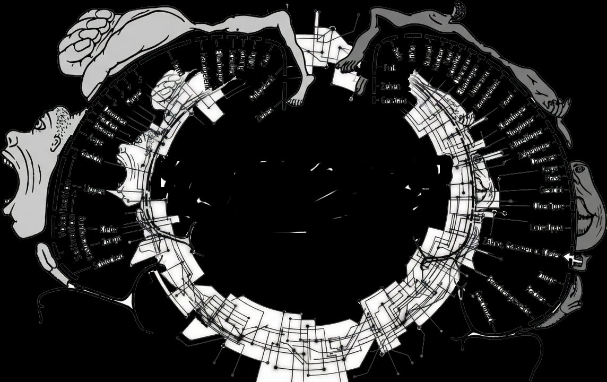
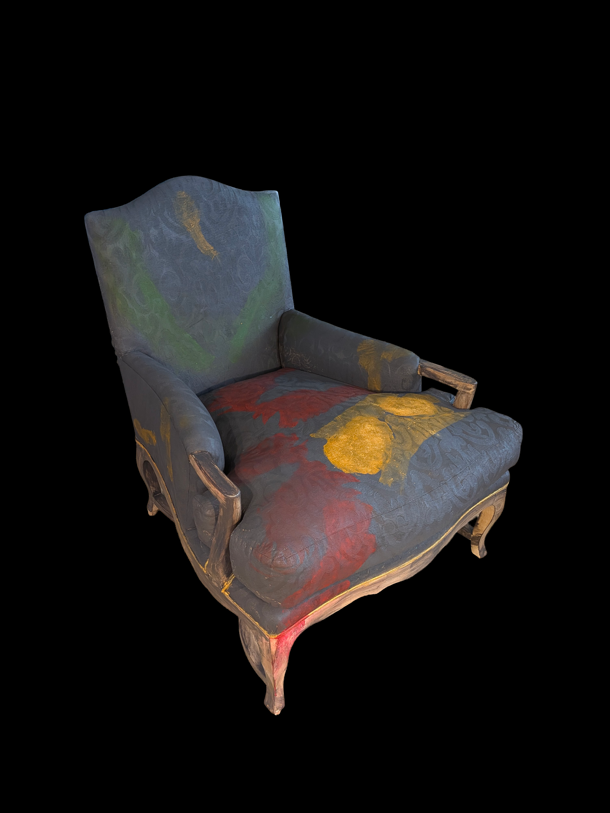
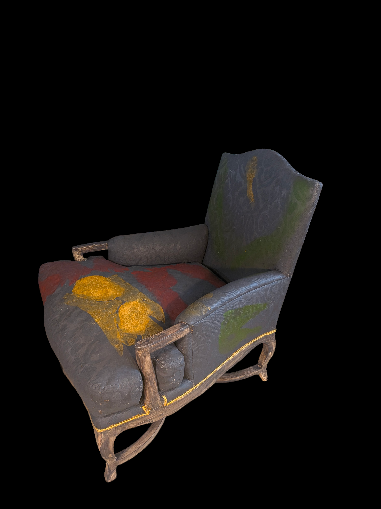
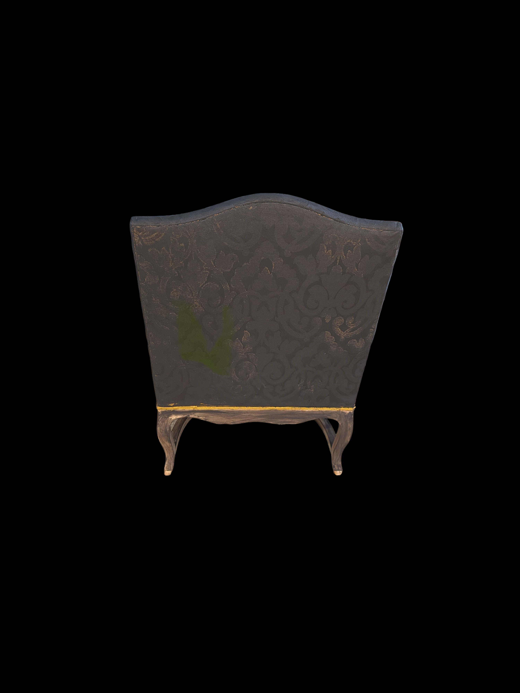
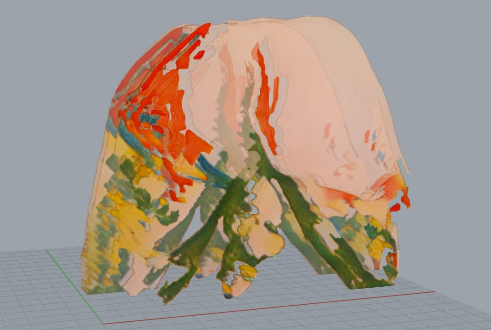
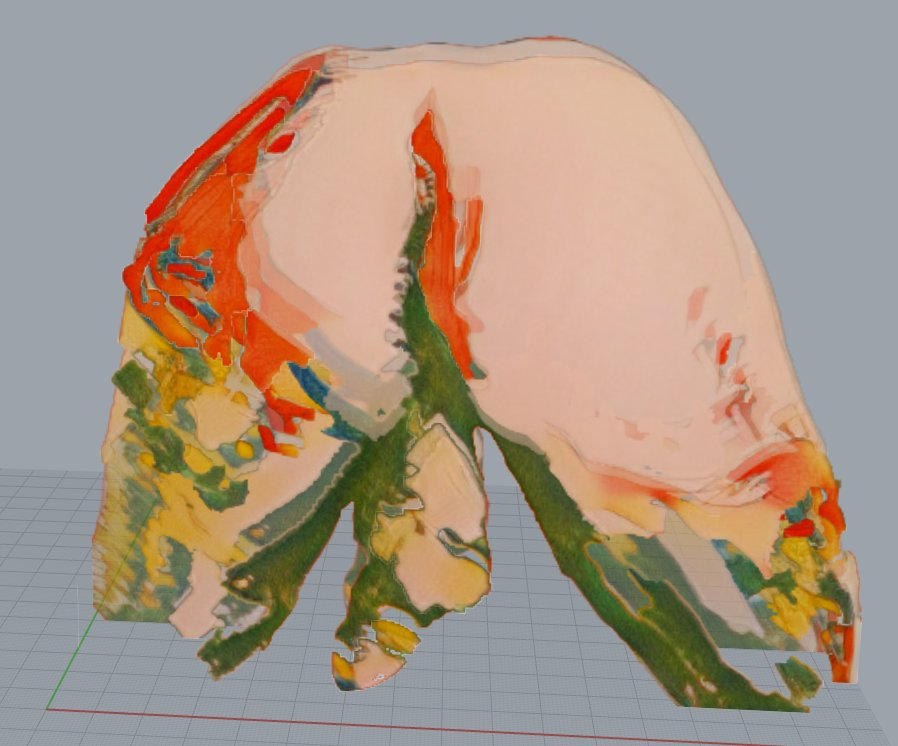
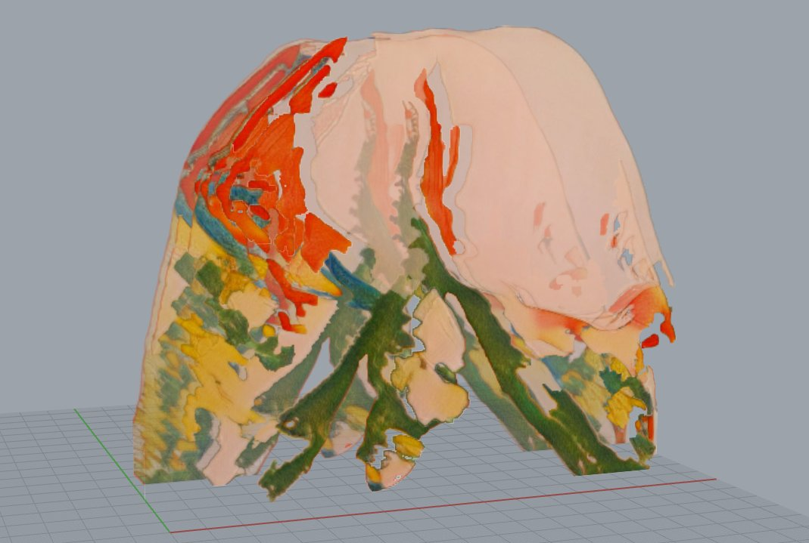

A Selection of Works · Natasha Bajc · 2026
To render is to translate, to process, to extract. In digital production, rendering is the final act — the moment raw data becomes visible form. In the abattoir, rendering is the reduction of flesh to its constituent materials. Technosomatic—Rendered inhabits both definitions simultaneously.
The body in this work has been passed through a machine — photographed, processed, etched, printed, stretched onto canvas, then touched again by hand. What returns is not the original body and not pure image, but something in between: a body that bears the mark of having been processed, of having survived its own translation.
The crosshatched skin, the etching that reads as geological strata, the acid ground that refuses to recede — these are not stylistic choices. They are the record of a procedure. The body rendered is a body that has undergone something.

Fig. 01 — Corpus Nullum (Phantom Imprint) · Front
The chair begins as a found object — Louis XV form, beige, pompous, insisting on a dignity it never earned. It belonged everywhere and declared nothing. It belonged, specifically, to no body. The body is not visible from any single position.







The chair begins as a found object — Louis XV form, beige, pompous, insisting on a dignity it never earned. Upholstered in the color of aspiration and invisibility, it belonged everywhere and declared nothing. It belonged, specifically, to no body.
It was painted dark grey.
That act is not preparation for the work. It is the work's first gesture. The original surface — domestic, self-effacing, designed to recede — is erased and replaced with something that refuses invisibility. What the chair was used for, what bodies did in it, what it absorbed and retained across its life as a functional object, becomes legible only after the surface that normalized it is removed. The painting exposes what the beige concealed: that furniture is not neutral. That every chair holds the memory of occupation.
Onto this darkened ground, the full map of a body has been distributed without the body being present.
The marks are literal and specific: gold phallus on the backrest, gilded breasts on the front corner, red heat marks and drip on the front apron, green inverted figure climbing the backrest. Each mark corresponds to a body part, a pressure point, a moment of contact. Assembled together they constitute a complete figure — disassembled across the object, visible only to a viewer who moves around it.
These are not marks from a single occupation, nor from a simultaneous presence. They are phantom imprints — somatic residues left by full figures across time, accumulated on the same surface without necessarily ever sharing the same space. There is no such thing as a sexual relationship. What remains is its evidence.
The damask pattern of the upholstery presses through the paint rather than disappearing beneath it. The decorative history of the object and the marks of occupation exist on the same surface simultaneously. Neither cancels the other. The chair's original identity survives its own erasure.
The work belongs to Technosomatic — Rendered, a series investigating the body as it passes through processes of translation — digital, material, photographic — and returns altered. In Corpus Nullum the process is reversal: rather than the body being rendered by technology, the body renders the object. The chair receives what the body leaves. What remains is not a portrait but an index — the somatic data that the digital fiction cannot erase, the phantom impression of an absence that was once fully, physically present.
The chair should be approached from all sides. The body is not visible from any single position.
Three states of the same body. The chartreuse ground — acid, artificial, hostile — refuses to recede. The etching texture denies the flesh its softness while making it more present. Not heroic nudes. The canvas receives ink, then receives paint: a double translation that marks the body twice. Three poses, three exposures — the body as specimen under a ground that will not recede into neutrality.

Fig. 02 — Triptych Corpus (I, II, III)

Fig. 03 — Male Odalisque
The odalisque as historically passive, available, displayed — inverted by the female gaze that produces the image. Amber and ochre push the body toward terracotta, something fired. The architectural cold of the background reads against the body's radiated warmth. The pose is simultaneously vulnerable and unselfconscious. The glasses insist on a particular Tuesday afternoon. That specificity is the work's sharpest edge.





Fig. 04 — Descending Data · Front view · Click to rotate
The ego as holographic structure — present, luminous, entirely dependent on a light source for its existence. Ten architectural slices of the figure, each printed on transparent mylar laminated to plexiglass, stacked with precision air gaps. The LED base fires upward through the panel edges; light propagates via total internal reflection until it strikes the printed ink, which glows. The figure does not project outward. It illuminates from within its own material. Remove the power and the portrait disappears.
Click thumbnails to rotate viewing angle.
Fig. 05 — Corpus Solus (Face 13) · MP4, looped · Vimeo
A face recorded in the private act of orgasm — the body's glitch, the moment flesh exceeds its own architecture. The face dissolves: not into abstraction but into involuntary sensation, the social mask suspended. What the digital interface promises and structurally forecloses, the body enacts alone. The counterpart to Corpus Nullum: where the chair holds absence, this holds the act. The loop holds what cannot be held. Played on any screen. Witnessed by no one.
Natasha Bajc
Natasha Bajc is a Serbian-born, Los Angeles-based artist, architect, and researcher working at the intersection of the body, technology, and digital process. Her practice operates under the framework of Technosomatic Architecture — an inquiry into how the body is translated, processed, and returned altered through digital and material systems.
Bajc holds advanced training in architecture and computer science and has taught at the collegiate level in Los Angeles, with affiliations including SCI-Arc, UCLA and USC. She is a founder of Nexus Hestia Technologies, where she develops research at the intersection of artificial intelligence and spatial practice. She gave one of the first TEDx talks in Belgrade in 2010, and participated in the Venice Biennale of Architecture in 2018.
Her current body of work, Technosomatic — Rendered, spans digital print on canvas, found object sculpture, holographic installation, and video. The series has been presented through Animamus Art Salon.
Bajc lives and works in Los Angeles.
Artist
Natasha Bajc
Artist · Architect · AI Researcher
Los Angeles, California
Enquiries
natasha@natashabajc.com natasha.bajc@nexushestia.comNexus Hestia Technologies
SCI-Arc / UCLA / USC